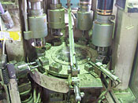
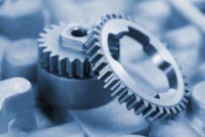

RECRUIT｜正社員募集
家庭の電力メーター部品をつくる、千葉県白井市の町工場。未経験からのスタートを、熟練の職人がマンツーマンで支えます。


家庭用の電力量計（電力メーター）やブレーカーに組み込まれる端子金具など、生活に欠かせない精密金属部品を製造しています。景気に左右されにくい安定した受注があり、腰を据えて技術を磨けます。
少人数のため、まずは簡単な検品からスタート。図面の読み取りからプログラム作成、加工まで一貫して関わる「多能工」を目指せます。

熟練の職人がマンツーマンで指導。単一作業ではなく、図面〜加工まで幅広く担う「多能工」として成長できます。玉掛けなど資格取得の費用は会社が全額負担します。

電力メーター部品は生活に不可欠。昭和42年の創業以来、大手メーカーへ製品を供給し続けており、常に安定した仕事量があります。

土日祝休み・年間休日120日は製造業では高水準。残業は月平均5時間。休憩時間は社内で飼育しているメダカを眺めてひと息、が当社流です。
※元サイトのご挨拶をもとにした案文です。正式な文面はお客様にご確認ください

昭和42年、東京・葛飾の下町の小さな工場から、当社は出発しました。以来約60年、時代のニーズに応えながら、精密金属部品ひと筋に歩んできました。合言葉は「お客様クレームゼロ」。品質と納期への誠実さが、大手メーカー様との長いお付き合いを支えています。
私が大切にしているのは、負けん気とチャレンジ精神です。新しいことに挑めば、必ずしくじる。それでも「負けるもんか」と、昨日までの自分を超えていく。そんな気持ちで手を動かせる方となら、経験の有無は関係ありません。
次の時代の中村金属工業を、一緒につくりましょう。工場でお待ちしています。
株式会社中村金属工業 代表取締役 中村 幸一





※ここはサンプルです。実際には御社スタッフの1日の流れに差し替えます
制服に着替え、機械と材料の状態をチェックします。
当日の加工予定と担当をみんなで共有。少人数なので相談もすぐできます。
NC旋盤・専用機で端子金具を加工。先輩がそばについて教えます。
ゆっくり60分。メダカの水槽を眺めながらリフレッシュするのが定番です。
午後は検品や仕上げも担当。品質を自分の目で守ります。
機械の清掃と材料の段取りをして、明日に備えます。
残業は月平均5時間。定時で帰れる日がほとんどです。
※ここはサンプルです。実際に働く先輩からのメッセージ・写真に差し替えます
まったくの未経験で入社しましたが、先輩がつきっきりで教えてくれたので不安はすぐなくなりました。今では機械の段取りまで任されています。
少人数なので意見が言いやすく、風通しの良さが自慢です。土日祝休みで趣味の時間もしっかり取れています。
電力メーターの部品は世の中に必要とされ続ける仕事。景気に左右されず、腕一本で長く働けるのがこの仕事の良さです。
※ここはサンプルです。実際には御社の「よくある質問」が入ります
はい、大歓迎です。まずは簡単な検品からスタートし、先輩がマンツーマンで機械操作を教えます。「まずやってみる」前向きな姿勢を評価します。
必須の資格はありません。電気工事士や玉掛けの資格・経験があれば尚可です。玉掛け免許の取得費用は会社が全額負担します。
書類選考のあと、面接1回を予定しています。結果はそれぞれ7日以内にご連絡します。応募前の工場見学も歓迎です。
マイカー・バイク通勤OK、駐車場もあります。通勤手当は実費支給（上限なし）です。
残業は月平均5時間程度です。仕事の状況により土日出勤の可能性がありますが、その場合は休日手当を支給し、週40時間以内で調整します。
※写真・メッセージはサンプルです。実際の担当者情報に差し替えます
能書きより、まずやってみる。そんな前向きな方をお待ちしています。少人数のアットホームな工場です。まずは工場見学で、現場とメダカたちを見に来てください。お気軽にご連絡を。
| 職種 | 金属部品の製造加工（機械操作・工場内全般）／電力メーター |
|---|---|
| 雇用形態 | 正社員（雇用期間の定めなし） |
| 給与 | 月給280,000円〜320,000円 ※試用期間6ヶ月：月給250,000円（習熟度により短縮あり） |
| 昇給・賞与 | 昇給あり（前年度実績：月5,000円〜10,000円）／賞与制度あり |
| 勤務地 | 千葉県白井市木845-3（北総鉄道 西白井駅 徒歩30分） マイカー・バイク通勤可（駐車場あり） |
| 勤務時間 | 8:30〜17:30（休憩60分）／残業月平均5時間 |
| 休日休暇 | 土日祝（週休二日制）／年間休日120日／6ヶ月経過後の有給休暇10日 |
| 待遇・福利厚生 | 各種社会保険完備（雇用・労災・健康・厚生年金）／退職金共済加入／通勤手当実費支給（上限なし）／制服貸与／資格取得支援（玉掛け免許取得費用 全額会社負担）／社内親睦会（食事会） |
| 応募資格 | 学歴・経験不問（電気工事・玉掛けの経験あれば尚可） |
| 選考 | 書類選考＋面接1回（結果は各7日以内に通知） |